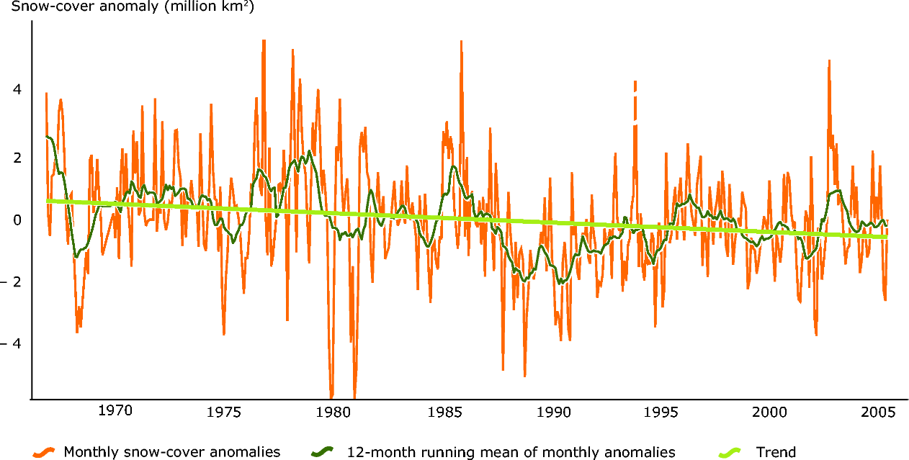
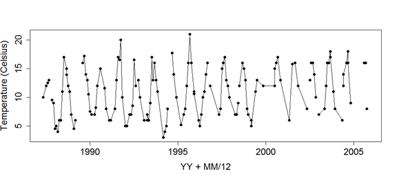

Tutorial Sheet 2
1 Part A: Seasonal and trend analysis.
Several of these examples are similar in nature to exam questions, in that you are asked to comment on statements being made or on analysis already completed.
Task 1
The following excerpt is taken from the European Environment Agency web site, concerning one of their key indicators (CLIM008) for snow cover (accessed Jan 2011).
“Data from satellite monitoring (NESDIS-database at NOAA) from 1966 to 2005 show that monthly snow-cover extent in the northern hemisphere is decreasing by 1.3 % per decade (Figure 2.1), with the strongest retreat in spring and summer (UNEP, 2007).”
Discuss critically the statement concerning the decrease per decade, and the comment concerning the spring and summer effects. Figure 1 shows a ‘trend’ a 12 month running mean and the original values expressed as anomalies, compare and contrast the three representations.

Task 2
It is of interest to look at temperature records in Loch Lomond and to consider what the trend might be in water temperature. The data shown here are for Cailness in the north basin of the Loch. Comment on the patterns over time in this record. What other plots might you look at and how might you model this data to investigate the changes in temperature over time. There are some missing data values which you might consider how to impute. The data are available to explore on Moodle if you want to look at this in detail.

Task 3
The following excerpts are taken from the National Snow and Ice Data Centre (NSIDC) site, concerning arctic sea ice:
Statement 3a
“Arctic sea ice extent in January 2012 averaged 13.73 million square kilometers (5.30 million square miles). This is the fourth-lowest January ice extent in the 1979 to 2012 satellite data record, 1.10 million square kilometers (425,000 square miles) below the 1979 to 2000 average extent. Including the year 2012, the linear rate of decline for January ice extent over the satellite record is 3.2% per decade. Based on the satellite record, before 2005, average January ice extent had never been lower than 14 million square kilometers (5.41 million square miles). January ice extent has now fallen below that mark six out of the last seven years.”
Statement 3b
“The growth rate for Arctic sea ice in January was the slowest in the satellite record. After growing relatively quickly early in January, ice extent declined briefly in the middle of the month, and then grew more slowly than normal for the rest of the month. Overall, the Arctic gained 765,000 square kilometers (295,000 square miles) of ice during the month. This was 545,000 square kilometers (210,000 square miles) less than the average ice growth rate for January 1979 to 2000.”


Discuss critically the two statements above concerning the 2012 sea-ice making reference to Figures 3.1 and 3.2, specifically the decrease per decade. Comment on the statistical methods and assumption which could be used to fit the models shown in the Figures. How would you interpret Figure 3.2 in terms of the comparison of the 5 curves shown to the 1979-2000 average curve?
Task 4
Carbon dioxide concentrations are routinely measured at many places around the globe- one such data set is shown below with also some text describing how the plot and smooth curve was produced.
“To reduce noise in the determination of the global estimate due to atmospheric variability and measurement gaps, we fit a smooth curve to the weekly measurements.
To approximate the long-term trend and average seasonal cycle at a site, a function of the form
\[S(t) = \alpha_o + \alpha_1 t + \alpha_2 t^2 + \sum_{k=1:4}\left[b_{2k-1} \text{sin}(2\pi kt) + b_{2k} \text{cos}(2\pi kt)\right]\]
is fitted to the measurements [Thoning et al., 1989]. The above function includes 3 polynomial parameters (quadratic) and 8 harmonic parameters, associated with the sine and cosine terms which can be converted to amplitude and phase of each harmonic, if desired.”
Figure 4 shows the smooth curve, \(S(t)\), in red fitted to weekly background CO2 measurements from Ascension Island for 2000-2009.
Discuss the approach described in the statement concerning Figure 4 to quantify trend.

Task 5
The following excerpt is taken from the European Environment Agency web site, concerning one of their key indicators (CSI012) for European temperature (accessed Jan 2010):
“The Earth has experienced considerable temperature increases in the last 100 years, especially in the most recent decades. These changes are unusual in terms of both magnitude and rate of change. The rate of change in the global average temperature is accelerating from 0.08\(^\circ\)C per decade over the last 100 years, to 0.13\(^\circ\)C per decade over the past 50 years up to 0.23\(^\circ\)C per decade over the last 10 years (all values represent land & ocean area) (IPCC, 2007a). As such the indicative target (to keep climate change within ‘safe’ limits) of 0.2\(^\circ\)C per decade has been exceeded in the recent years.”
The figure below shows the time series plot of the CSI012 indicator, which has been developed to address specific policy issues concerning the trend and rate of change in the European annual and seasonal temperature.

Discuss critically the statement and the above figure and how they might be related. Suggest how you might model such temperature data above to address the policy issues.
Task 6
The plot below shows the Monthly time series of phosphorous (P) concentrations in mg/l, Speed River, Guelph, Ontario between 1972.1–1977.1.

Comment subjectively on the patterns in the plots P in the River Guelph and how you might statistically model any trends/patterns over time observed.
The output below shows the summary information for the Mann Kendall score for all time points and for the data split by month (Seasonal). Use the information to carry out a Mann Kendall test and seasonal Mann Kendall test and compute the Mann Kendall correlation coefficient for each. Interpret your results.
All Time Points Seasonal
D = 2546.482 D = 178.4556
S = -1171 S = -99
Var(S) = 42292.33 Var(S) = 337Task 7
The figure below shows a regression example from a recent paper in Science (Johnson et al, 2014) which investigated the rate of thinning of the Pine Island glacier. They fit a “2-segment, piecewise-linear age-elevation history to the Mt Moses data”.

Explain what the phrase in bold above means, and write down the equation for a 2 stage regression, assuming a known changepoint. Explain how the parameters of the model can be estimated. Comment briefly on the figure above.
2 Part B: Models for extremes
Task 8
If \(X_1, \dots, X_n\) is a sequence of independent standard exponential \(Exp(1)\) variables,
- Show that \(F(x)= 1-e^{-x}\) for \(x> 0\).
- Show that, for \(a_n=1\) and \(b_n=\log(n)\), the limit distribution of \(M_n\) as \(n \rightarrow \infty\) is the Gumbel distribution, corresponding to \(\zeta = 0\) in the GEV family.
Task 9
If \(X_1, \dots, X_n\) is a sequence of independent standard exponential \(Exp(\lambda)\) variables,
- Show that \(F_n(x)= (1-e^{-\lambda x})^n\) for \(x> 0\), where \(F_n(x)\) is the distribution of \(X(n)\).
- Find the distribution function of \(X_{(1)}\), and show that \(X_{(1)}\) has an Exponential distribution with parameter \(n\lambda\).
Task 10
- Daily wind speed data are available for a location in the Netherlands. A POT modelling approach has been used to model the data. The figure below shows a mean residual life plot for the series. Comment on how you could use this plot to identify a suitable threshold for the POT model. What threshold would you select here?

- The figure below shows the diagnostic plots for a fitted POT model for the wind speed data. Comment on the model fit using these plots.

- The threshold selected was 10. Comment on this choice using the sensitivity analysis below.

- The R output for the model is shown below.
$threshold
[1] 10
$nexc
[1] 105
$conv
[1] 0
$nllh
[1] 92.17218
$mle
[1] 0.9278907 -0.0473220
$rate
[1] 0.00684485
$se
[1] 0.12364549 0.09084164Estimate the 1 in 100 year wind speed.
Task 11
The generalized extreme value distribution (GEV) has three parameters and distribution function
\[G(z) = \exp \left\{ -\left[ 1+\xi\frac{(z_i - \mu)}{\sigma}\right]^{\frac{-1}{\xi}}\right\}\]
GEV is often used when modelling block maxima. Identify the particular family and write down its distribution function when \(\xi\) is assumed equal to 0.
Show that when \(G(z_p) =1-p\), then
\[z_p = \begin{cases} \mu - \sigma \frac{[1-\{-\log(1-p)\}^{-\xi}]}{\xi} & \text{for } \xi \neq 0\\ \mu - \sigma[\log\{-\log(1-p)\}] & \text{for } \xi = 0\end{cases}\]
For the distribution \(G\) in the case \(\xi=0\), show that if \(z_p\) is plotted against \(\log[–\log(1-p)]\), the plot should be linear.